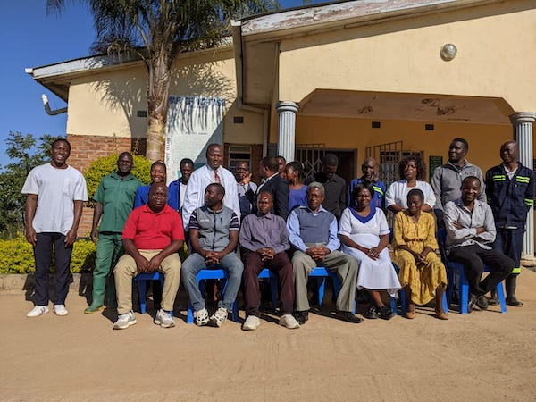

K2 TASO

K2 Tigwiranemanja AIDS Support Organisation (K2 TASO) is a located NGO which
has its secretariat in Mtunthama, rural Kasungueast, Central Malawi. K2 TASO
exists to offer livelihood security which as the organisation believes that
the world would have been a fair place to live if everyone had access to
quality health, good education, good nutrition, healthy and clean water,
good income, value for human rights while contributing in the fight against
climate change. K2 TASO plays a role to implement these concepts of
livelihood security.